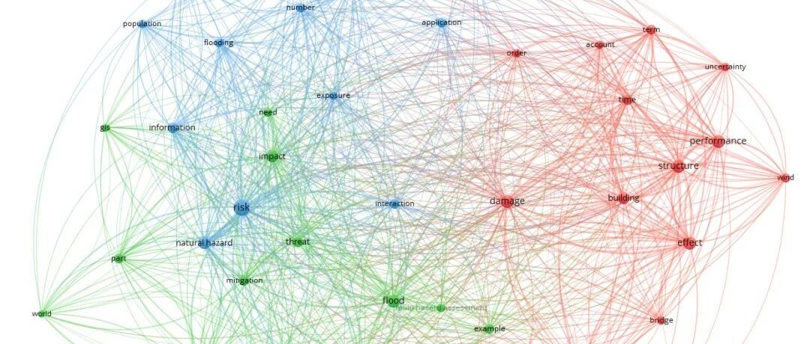

转载 | 浅谈“多灾害”研究的现状和挑战
以下文章来源于学术小镇 ，作者DrXuZhen

北科大许镇老师的公众号

今日，本人有幸参加国家自然基金委主办的第二届土木工程青年学者沙龙，参与“人为灾害及多灾害综合韧性防御”主题讨论。
多灾害（Multi-hazard）是当前防灾减灾领域一个新兴且重要的研究方向。
今天，“学术小镇”就根据相关SCI论文数据浅析当前Multi-hazard研究的现状和挑战。
1. Multi-hazard大爆发，美中意为主力
Multi-hazard主题发文量如下图所示，可以看出，近5年发文量呈爆发式增长。这也充分证明了Multi-hazard确实近些年的热门主题。

各国间发文量及引用关系如下图所示。可以看出，美国依旧是龙头地位。此外，意大利和中国也位列3甲。要出国考察多灾害研究的话，美国和意大利可以重点关注。

2. Risk, damage, performance为主要关键词
根据这些161篇论文，制作了关键词网络图，如下所示。关键词节点越大，说明重要性越高（可点击查看高清图）。

可以看出，Risk, damage, performance是最主要的三个关键词，也是当前Multi-hazard研究关注的重点。
此外，structure和building也很突出，反映了Multi-hazard研究的主要对象。从灾种来看，flood比较显眼，看来地震和火灾方面还得加油啊！
3. 《Natural hazards》和北师大表现亮眼
多灾害研究的期刊哪家强呢？直接上图。

可以看出，《Natural hazards》最为抢眼，这是Springer旗下的灾害领域刊物，目前影响因子1.901，在土木领域也还不错。
此外，《Engineering Structures》、《Structural Safety》也是土木领域比较好的刊物。读者如有多灾害相关论文，上述刊物都可以考虑。
多灾害研究哪家单位强呢？下图给出了一个排名。

排名第一的是维也纳大学。特别说一下国内的北师大(Beijing Normal University)在多灾害研究也非常强，特别是发文量方面优势很突出。北师大设有应急管理部-教育部减灾与应急管理研究院，自然灾害研究方面实力很强。
4. 高被引论文点明主要挑战
在本文分析的161篇SCI论文中，最高被引的是一篇《Challenges of analyzing multi-hazard risk: a review》论文，由世界银行和维也纳大学等单位完成，发表在2012年的《Natural Hazards》上，在Web of science 上总引用128次。
论文指出多灾害研究具有四方面挑战：
4.1 Multi-hazard analyses
多灾害分析具体面临2方面难题：灾害间的可比较性(Comparability)和关联性(relation)。注意：这里的Multi-hazard analyses强调的是灾害自身，也就是致灾体，没有包括承灾体。
（1）可比较性
评估不同强度的灾害发生概率是灾害分析的主要任务。
然而，每种灾害的特性、强度、重现期和致灾机理都不相同，如何整合不同灾害的特点，量化多灾害风险是一个重要难题。
该论文给出了一个例子，如下图所示，说明了衡量不同灾害强度的参数是存在巨大差异的。

（2）关联性
该论文给出了多灾害间的常见关系，包括级联（Cascade）、链式反应（Chain）、多米诺效应（Domino）等，如下图所示。

可以看出，灾害间的关联是复杂的，揭示这些关联的内在规律是多灾害研究的一个核心难题。
4.2 Analyses of the physical vulnerability for multiple hazards
多灾害的物理易损性分析也存在2个难题：多灾害易损性模型的建立和关联。
首先，建立多灾害易损性模型非常难。
一个灾种的易损性模型是一条曲线，而多灾害的易损性模型并不是简单的曲线叠加，应该是一个多维度的复杂曲面。论文中给出了两种灾害作用的易损性曲面，如下图所示。

在物理易损性方面，多灾分析与单灾分析具有两大差异：
（1）灾害自身就会改变承灾体的易损性，因此，在多灾害分析中，承灾体的物理易损性是随灾害作用而变化的。
（2）多灾害易损性不是单灾易损性的叠加，而是存在复杂关联。多灾害下，可能出现两种灾害耦合作用大于分灾害之和（如风+火），也可能出现小于分灾害之和的情况（如雨+火）。
其次，承灾体自身对不同灾害的易损性也不同。
有些建筑属性对于不同灾种的易损性贡献是相互矛盾的，如下表所示。

例如建筑层数越高，对于火灾逃生和救援都不利，但对于洪水被淹是有利的。因此，即使是同一个承灾体对于不同灾害的易损性也是存在很大差异的。
4.3 Multi-hazard risk analyses
该论文中的risk是指hazard和vulnerability的共同作用结果。上述hazard和vulnerability各自都面临挑战，risk自然也存在很大的挑战。本文不再赘述。
4.4 Visualization
多灾害分析结果非常复杂，需要有效的可视化手段，以使分析结果有效传播。
有研究制定了不同风险的颜色模式，如下图，但是这种模式只适用于单灾害。

对于多灾害分析，颜色不够用了。因此，必须发展具象的、三维的、量化的可视化手段，以满足多灾害分析复杂结果的可视化需求。
5. 结语，但并未结束